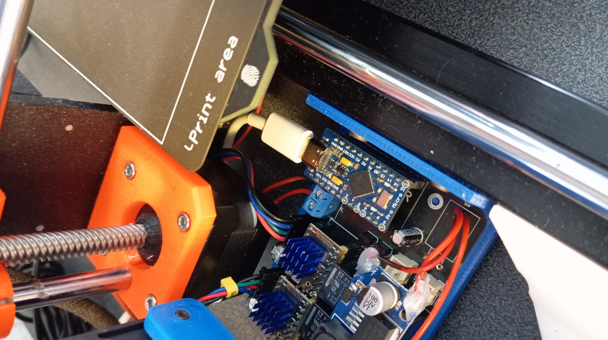
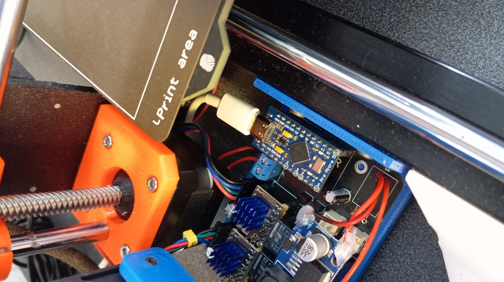
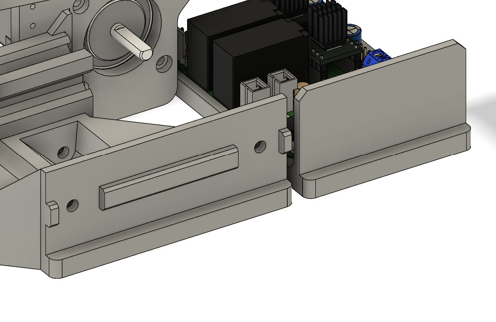
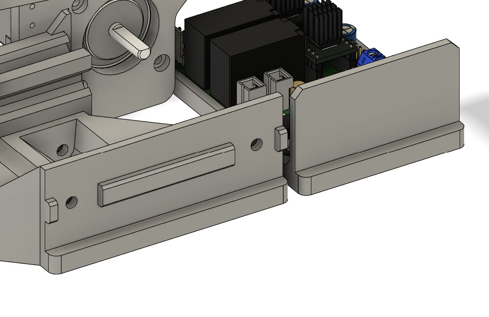

AutoEjector: système automatique d'éjection de modèles pour imprimante 3D


 


Description du projet
Après plusieurs mois de projets freelance en conception 3D d'équipements de laboratoire, on m'a proposé une tâche directement liée à ma spécialisation d'ingénieur. L'objectif était de créer un système qui retire automatiquement le modèle fini du plateau de l'imprimante 3D (en l'occurrence une Prusa MK3S) et lance l'impression suivante sans intervention humaine.
Le projet s'appuyait sur un concept existant disponible sur GitHub, mais comme souvent, la pratique s'est avérée bien plus complexe. Malgré une estimation optimiste de deux semaines, le projet a duré plusieurs mois et a couvert de nombreux aspects : de l'amélioration mécanique au développement d'un plugin OctoPrint personnalisé.
Réalisation
Partie matérielle
Le travail a commencé par l'analyse des matériaux fournis par le client. Outre l'imprimante elle-même, j'ai reçu des pièces partiellement imprimées, du filament et de l'électronique. Dès la préparation, des problèmes de compatibilité des composants de la carte électronique sont apparus. Certains éléments n'avaient pas les bons empreintes dans EasyEDA, d'autres ont dû être remplacés, comme les connecteurs de ventilateurs.

Certains composants mentionnés dans le schéma original n'ont finalement pas été utilisés : les relais et ports LED sont restés inactifs. Il manquait également certaines pièces imprimées que j'ai dû fabriquer moi-même.
Les colis avec tout le matériel sont arrivés sur un mois, avec plusieurs commandes supplémentaires nécessaires.


Le premier assemblage a révélé de nombreuses incohérences : trous mal alignés, vis trop longues, et certaines pièces sans trous de montage. J'ai dû repenser certaines parties comme les supports de moteurs pour plus de rigidité et compenser les défauts avec des rondelles plastiques d'épaisseurs variées.

 


Après avoir corrigé la mécanique, j'ai commandé une version révisée de la carte électronique. La commande comprenait trois cartes vierges et deux partiellement assemblées, pour environ 44 euros. Le soudage a été minimal - supports pour Arduino et pilotes de moteurs pas-à-pas.

Alimentation électrique
L'alimentation du système a été prise sur celle de l'imprimante (24 V), nécessitant le dévissage difficile des borniers. Le projet prévoyait l'utilisation de ventilateurs 12V connectés via un régulateur linéaire. Ce montage s'est révélé non fonctionnel : le régulateur surchauffait, se mettait en protection et ne redémarrait qu'après une réinitialisation complète.


Je l'ai remplacé par un convertisseur DC-DC réglable basé sur LM2596. Il a parfaitement fonctionné. Cependant, un ventilateur est tombé en panne (probablement défectueux), nécessitant un remplacement.

Intégration logicielle
Le système était contrôlé via OctoPrint sur Raspberry Pi. L'Arduino se connectait en USB et communiquait avec le Pi en série. Cela a permis d'établir un échange de commandes pour contrôler les moteurs pas-à-pas et ventilateurs.


Partie logicielle
Initialement, le projet ne disposait que d'un script Python et d'un firmware Arduino, le script étant inutilisable seul. Le firmware Arduino fonctionnait mais nécessitait des modifications. J'ai dû :
- Restructurer les commandes série
- Ajuster les fonctions de contrôle des moteurs pas-à-pas
- Implémenter un traitement correct des états et retours
- Détecte la fin d'impression
- Envoie les commandes d'éjection à l'Arduino
- Lance une nouvelle impression après confirmation
Difficultés
Le développement n'a pas été sans accroc. J'ai grillé plusieurs pilotes de moteurs (un lors du réglage du courant, probablement par court-circuit avec le multimètre, deux autres par mauvaise insertion). Un incident a endommagé les broches SPI de l'Arduino, mais j'ai pu les émuler logiciellement et souder des fils sur d'autres broches.
Ces problèmes ont ralenti le projet, mais le client a fait preuve de patience. Il y a eu des centaines de tests infructueux, certains enregistrés mais non inclus ici.
Résultat
Le prototype final fonctionne comme prévu. Cependant, le projet n'est pas tout à fait terminé : la version actuelle convient mieux à un utilisateur expérimenté qu'au grand public. La prochaine étape sera probablement une version 2 améliorée et plus fiable.